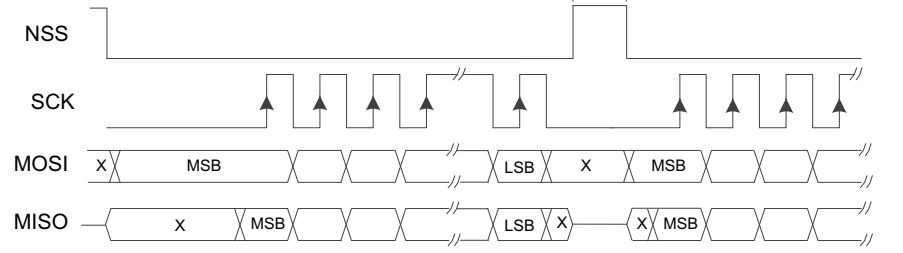
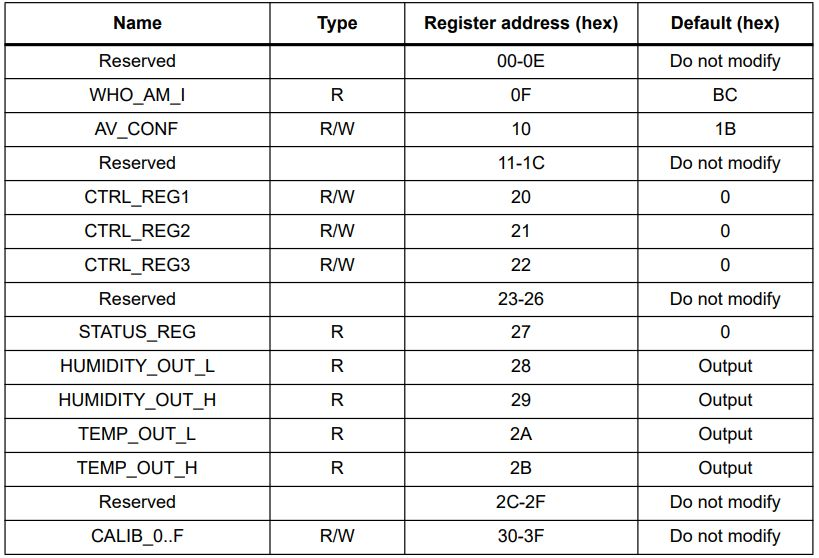
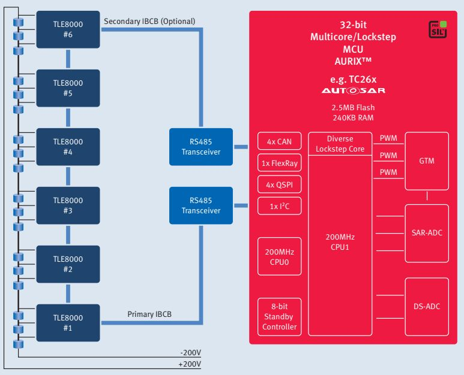
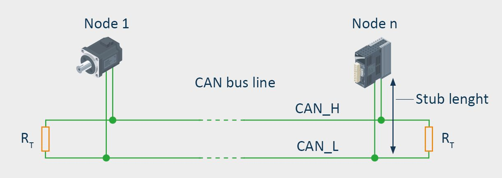

UpSKILL / ReSKILL
การพัฒนาเฟิร์มแวร์สำหรับระบบสื่อสาร CAN bus ในยานยนต์
June 10, 2569
Async/Sync serial: timing
UART

SPI

Processor-to-chip protocol
UART protocol
- การสื่อสารแบบ point-to-point
- มักใช้กับ processor-to-processor
- มีขาเพิ่ม RTS / CTS สำหรับ handshake1
- โครงสร้าง command/data frame แบบ custom

- รูปแบบ AT command


SPI/I2C protocol
- เป็น comm bus → ต้องอ้างถึงอุปกรณ์
- SPI ใช้ขา CS
- I2C ใช้ device address
- สั่งการผ่านระบบ register ของตัว chip

Automotive network
Electronic Control Unit (ECU): embedded system in automotive electronics that controls one or more of the electrical systems or subsystems in a car or other motor vehicle. 
ECUs in vehicle
Safety ECU

Passenger ECU

ECUs in vehicle
Safety ECU

Battery ECU

In-vehicle network
CAN transceiver
- CAN controller → TXD, RXD pins
- CAN transceiver → CANH, CANL pins

LIN transceiver
- UART → TXD, RXD pins
- LIN transceiver → LIN pin

CAN bus
โครงข่ายของกลุ่ม ECU ที่สื่อสารแบบ broadcast เน้นความน่าเชื่อถือและกรอบเวลาแน่นอน
- กลไก arbitation ผ่าน message ID
- short message (8 byte/64 byte)

CAN bus topology
Components1
- Node: อุปกรณ์ที่รับ/ส่ง CAN frame เข้า CAN bus
- Repeater: อุปกรณ์ทำหน้าที่เชื่อมโยงระหว่าง CAN bus ที่เหมือนกัน
- Bridge: อุปกรณ์ทำหน้าที่เชื่อมโยงระหว่าง CAN bus ที่ต่างกัน
- Gateway: อุปกรณ์ทำหน้าที่เชื่อมโยงระหว่าง CAN bus กับโครงข่ายอื่น


CAN bus signaling
- สายสัญญาณแบบ twisted-pair (CANH-CANL) + 120 \(\Omega\) termination

- สถานะ logical ของ CAN: Dominant (logic 0) Recession (logic 1)


- Transmit 1, sense 0 → lost arbritation
- Bit 0 → higher priority
CAN data/remote frame
CAN 2.0 frame
- ข้อมูลจำกัดที่ 8 byte, ความเร็วสูงสุด 1 Mbps


CAN-FD frame
- ข้อมูล 0-8/12/16/…/64 byte, ช่วง data field ปรับ bit rate ได้ถึง 8 Mbps


OBD-II (On-board diagnostics)

OBD-II over CAN (ISO 15765-4)
- Physical layer: 250 / 500 kbps
- Datalink layer: 11- / 29-bit ID
- Transport layer: SF (Single Frame), FF (First Frame), CF (Consecutive Frame), FC (Flow Control)
ID/payload definitions
| Concepts | Purpose |
|---|---|
Broadcast ID (0x7DF) |
payload = service/PID |
Resp msg ID (0x7E8-0x7EF) |
payload = service/PID/data |
| Parameter ID (PID) | codes used to request data, e.g. 0x03 = fuel status |
| Diagnostic Trouble Codes (DTC) | bit-encoded value of error code |
J1939 Transport Protocol
มาตรฐานของ SAE International เพื่อกำหนด layer ที่ต่อยอดโครงข่าย CAN bus
- ใช้ extended ID (29 bit) ด้วยความเร็ว 250/500 kbps
- 3-bit Priority, 18-bit Parameter Group Numbers (PGN), 8-bit Source Address
- CAN data frame ส่วนใหญ่เป็น periodic broadcast
- PGN 59904 (payload = PGN) ใช้ร้องขอข้อมูล
- โครงสร้างข้อมูลใน frame กำหนดด้วย Suspect Parameter Number (SPN)
- รองรับ transport layer


ECU data recording

Approach
- CCP/XCP polling
- CCP/XCP DAQ: ลำดับของ CRO/CRM เพื่อกำหนด address/length ในการทำ DAQ


Bit timing

- ความถี่ของ Time Quantum (
fdcan_tq_ck = fdcan_ker_ck/DIV) ต่อบิตควรมีค่า 8–25- ค่าเริ่มต้นแนะนำ: BS1 = 13 TQ, BS2 = 6 TQ (ที่ 500 kbps, 16 TQ/bit)
- ตำแหน่ง Sample Point ควรอยู่ที่ 60–80% ของช่วงบิต
- ลดความเสี่ยง unstable logic (เร็วไป) clock drift/jitter (ช้าไป)
FDCAN state machine

Acceptance filter
Std-ID filter: แฟลก SFT ตั้งโหมด และแฟลก SFEC คุมการส่งข้อมูลไป FIFO 
| Filters | Patterns | Examples |
|---|---|---|
| Range | ID มีค่าระหว่าง SFID1/SFID2 | SFID1=0x100, SFID2=0x120 → รับทุก ID ที่อยู่ในช่วง 0x100 ถึง 0x120 |
| Dual ID | มีค่าเท่ากับ SFID1 หรือ SFID2 | SFID1=0x200, SFID2=0x300 → รับเฉพาะ ID 0x200 และ 0x300 เท่านั้น |
| Bit mask | SFID1 เป็น filter ID และ SFID2 เป็น mask1 | SFID1=0x400, SFID2=0x7F0 → รับกลุ่ม ID 0x400 ถึง 0x40F |
Ext-ID filter: โหมดและ FIFO ขึ้นกับแฟลก EFEC/EFT และเงื่อนไขคือค่า EFID1/EFID2
CANable device1

Specification
- STM32G431 microcontroller
- CAN 2.0A/B: data rate 1 Mbps
- slcan protocol
slcan (Serial Line CAN) protocol2
| Commands | Effect |
|---|---|
O↵ |
เปิดช่องสื่อสาร |
C↵ |
เปิดช่องสื่อสาร |
S{n}↵ |
กำหนด baud rate S6↵ → 500 kbps |
M0↵ |
โหมด normal |
M1↵ |
โหมด bus monitoring |
t{id}{len}{data}↵ |
ส่ง data frame t1FF3112233↵ ID=0x1FF, 3 bytes, 0x112233 |
r{id}{len}↵ |
ส่ง remote frame r1FF3↵ ID=0x1FF, 3 bytes |
CANable firmware

Advantages
- Easy-to-use text commands
Weakness
- Direct TX, may lost frame
- Long execution in RX IRQ handler
candleLight FD device

Specification
- STM32G0B1 microcontroller
- CAN 2.0 และ CAN-FD: data rate 1 Mbps
- GS-USB protocol
GS-USB protocol: gs_usb.h
#define GS_CAN_FEATURE_LISTEN_ONLY (1<<0)
#define GS_CAN_FEATURE_LOOP_BACK (1<<1)
...
enum gs_usb_breq {
GS_USB_BREQ_HOST_FORMAT = 0,
GS_USB_BREQ_BITTIMING,
GS_USB_BREQ_MODE,
...
GS_USB_BREQ_ELM_SET_PINSTATUS,
GS_USB_BREQ_ELM_GET_PINSTATUS,
};
...
struct classic_can {
u8 data[8];
} __packed __aligned(4);
struct canfd {
u8 data[64];
} __packed __aligned(4);
...
struct gs_host_frame {
u32 echo_id;
u32 can_id;
u8 can_dlc;
u8 channel;
u8 flags;
...
} __packed __aligned(4);candleLight firmware1

Advantages
- Use mailbox to buffer passing data
- Higher throughput, more reliable
Weakness
- Deferred Tx/Rx operations
AUTOSAR standard
Adaptive platform: high-performance computing ECUs
Classic platform: embedded systems with hard real-time and safety constraints

- Application
- RunTime Environment (RTE)
- Basic SoftWare (BSW):
- Services
- ECU abstraction
- MCU abstraction
CAN with AUTOSAR

AUTOSAR CAN RX/TX flow
TX flow

RX flow